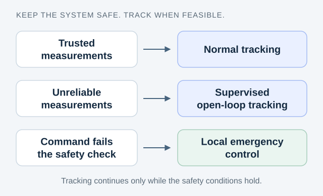

Can a system stay safe—and keep tracking—during an attack?
Use a graded response: preserve tracking when it is safe, and hand control to a local fallback when it is not.

The problem
Corrupted measurements or commands can push a constrained physical system outside its safe operating region. Switching immediately to an emergency controller can also sacrifice useful tracking performance.
The main idea
Learn worst-case reachable sets from data. Combine an anomaly detector and a controller-side tracking supervisor with plant-side command verification and emergency control. When measurements become unreliable, supervised open-loop tracking can continue while its safety conditions hold.
What the paper shows
The author manuscript presents safety arguments and a simulation example showing how the architecture protects constraints while retaining tracking where feasible.
Scope & limitations
The analysis concerns constrained linear systems, bounded disturbances, sufficiently informative data, a suitable tracking controller, and trusted local safety components. It does not guarantee uninterrupted tracking under every attack.
Journal article · European Journal of Control
A Data-Driven Approach to Preserve Safety and Reference Tracking for Constrained Cyber-Physical Systems Under Network Attacks
Summary based on: Full author manuscript · arXiv v2, June 2026 ↗
View citation BibTeX + copy
Journal citation uses the 2026 publisher record. The visual summary follows the open author manuscript.
@article{attar2026safetytracking,
title = {A Data-Driven Approach to Preserve Safety and Reference Tracking for Constrained Cyber-Physical Systems Under Network Attacks},
author = {Mehran Attar and Walter Lucia},
year = {2026},
journal = {European Journal of Control},
pages = {101661},
doi = {10.1016/j.ejcon.2026.101661}
}